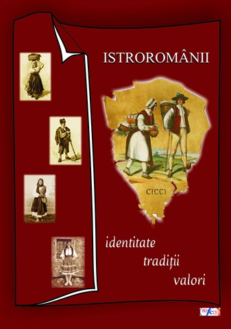
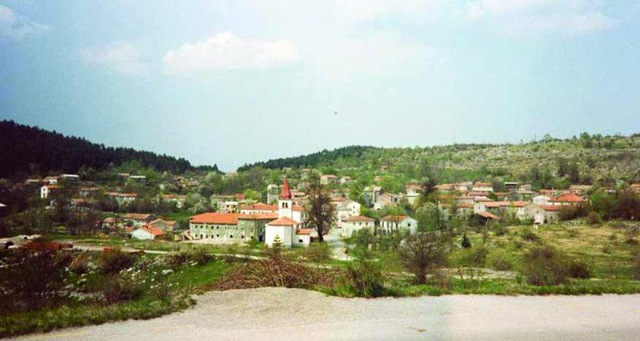
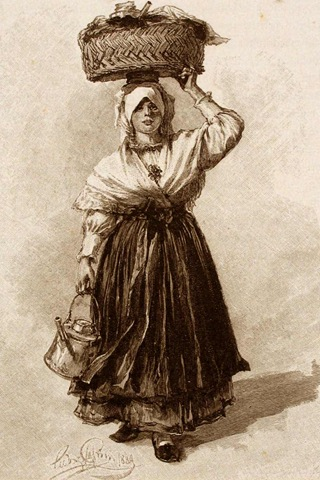
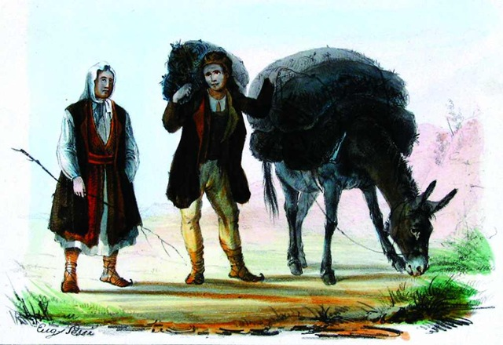

 Editura "ASTRA Museum" anunță ieșirea de sub tipar a volumului Istroromânii – repere cultural-istorice, carte care cuprinde totalitatea studiilor rezultate în urma cercetării de teren efectuată de echipa de muzeografi a C.N.M. "ASTRA" în Croația, în vara acestui an, la care se adaugă comunicările prezentate în cadrul sesiunii din septembrie. Coordonat de Elena Potoroacă și tipărit cu sprijinul Administrației Fondului Cultural Național, volumul este structurat pe patru capitole: Istorie, Lingvistică, Civilizație populară și tradiții și Conexiuni culturale. Un album fotografic color foarte consistent completează imaginea de ansamblu asupra cercetării de teren și a Zilelor culturii istroromâne la Sibiu.
În Cuvânt înainte, directorul Muzeului "ASTRA," domnul prof. dr. Corneliu Bucur, situează acțiunile legate de istroromâni pe linia programului de Asistență culturală pentru Diaspora, lansat în anul 2005: "Faptul că peste 2,5 milioane de cetățeni români, cu diaspora 3,5-4 milioane români, trăiesc, permanent sau vremelnic, în afara României și că prima lor necesitate spirituală, în dialogul cu țara adoptivă, de emigrație sau care i-a angajat temporar, este afirmarea identității lor etnoculturale, ne-a motivat inițiativa, angajamentul și programul, laborios întocmit și derulat prin mai multe forme de activitate și canale de mediatizare."
 Proiectul derulat de Muzeul "ASTRA" s-a bucurat de participarea a doi cercetători din Italia, domnul Emil Petru Rațiu, prezent în acest volum cu studiul Localități și castele din Valea Arsei și coincidențe istorice, și domnul Ervino Curtis, a cărui expoziție a putut fi vizitată, preț de câteva săptămâni, în holul Primăriei Municipiului Sibiu. Domnul Curtis face, în acest volum, câteva referiri pertinente la ideea de "fuziune de culturi și limbi în Europa de azi."
 Studiile cu tematică lingvistică abordează problematica elementului autohton în dialectul istroromân (domnul Vasile Frățilă), interferențele croato-slave (domnul Richard Sârbu) și termenii de origine italiană (doamna Ana Maria Pop). Subliniind dificultatea majoră pe care o întâmpină orice specialist care dorește să cerceteze elementele de substrat, și anume lipsa textelor ("cea mai importantă dovadă"), domnul profesor Vasile Frățilă trece în revistă acele cuvinte ale românei comune care se regăsesc în dialectul istroromân: "Probabil că cele mai multe elemente lexicale românești atribuite substratului traco-dac au caracterizat într-o epocă mai veche întreaga romanitate răsăriteană, deci româna comună, din care s-au desprins cele patru dialecte, inclusiv cel istroromân."
 Istoricul Lucian Robu, alături de Elena Potoroacă, realizează o trecere în revistă a istoriei istroromânilor, pe baza celor mai pertinente repere istorice din perioada sec. XIV-XX. Sunt menționate cele mai importante documente publicate pe această temă, ale unor cercetători care, în urmă cu secole, au refăcut traseul parcurs de istroromâni până în Croația, începând cu cercetarea lui Ioan Maiorescu, din anul 1857.
Cartea Istroromânii – repere cultural-istorice acceptă grile de lectură diverse, adresându-se deopotrivă cercetătorilor, oamenilor de știință, cât și celor care manifestă o minimă curiozitate față de acest fenomen uimitor al supraviețuirii dialectului istroromân și a unei mici, dar extraordinare comunități, în mijlocul unei culturi de sorginte slavă.
Ovidiu Baron
November 24, 2008
© 2008 Muzeul ASTRA - Jurnal Virtual